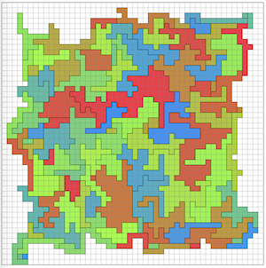

丸紅プログラミングコンテスト2023 (AtCoder Heuristic Contest 024)¶

問題概要¶
- n*nマスのグリッド上に表現された地図が与えられる
- m区あり、すべてのマスはいずれかの区に属している
- 区の隣接関係が同じであるような、できるだけ少ないマスで表現するようなものを見つけよ
時間¶
- 4 時間
個人的メモ¶
- グラフ(隣接情報のみ)に直してから再度グリッド上に埋め込もうと考えると、そもそも満たす解を作る時点で結構難しい
- ざっくり、隣接関係を維持したままグリッドのマスの色を変更する山登り/焼きなましが強かった模様
問題固有の性質¶
- 色の隣接関係のグラフは平面グラフ
- 盤面を回転・反転しても色の隣接関係は変わらない
隣接関係の判定¶
- 愚直にはO(N^2)で判定
- これは、近傍で変更するマスの周囲だけで考えられるので、O(1)差分更新できる
隣接関係を変えない行・列全体の削除¶
- https://note.com/ymatsux/n/nd33bbf9deff7
- https://twitter.com/laycrs/status/1705884912010825827
- これだけでも210,000点ぐらいとれる模様
- 部分的な削除を繰り返すと300,000点ぐらいまで狙えるっぽい？
近傍¶
1マス選んで、隣接マスの色で塗る¶
- 1マスを選んで、validな状態を維持できるなら、その隣接マスの色で塗ることで、状態を少しだけ変化させられる
- ただ、田のような隣接4マスですべて色が違うような場合を考えると、ある1マスの色を変えたい場合、変えた後に色の隣接関係が壊れてしまい、変更できない場合ができる
- 1マス隣接変更近傍だけだと、微妙に伸びた状態の局所解でハマったりする
- うまくいっていないケースの観察をするとわかる
2マスまとめて変更¶
- 上記の問題に対応するため、隣接2マス(以上)同時に変更することで対処
- 「隣接セルで塗ったら隣接関係が違反になる場合は、その違反になるセルも変更する」というのを繰り返すと複数マス同時変更が考えられる
- (平行移動的な感じ)
- (おそらく、2マス以上の連続処理だったり、上記の1マス近傍と合わせて連続で処理したほうが状態が大きく変化させられてよい模様？)
行・列の削除¶
- 1マス隣接変更近傍での局所解の改善として部分的に行・列の削除＆詰める処理をする
- ただ、領域が小さくするのには役立っても、小さくなった後の改善には役に立ちにくいため、2マス変更近傍のほうが強い模様
- 矩形削除も考えられる
外周の1マスを消す¶
- 1マス隣接変更近傍に内包されるが、外周の1マスを削る(色0にする)ような近傍も考えられる
invalidを許容¶
- 隣接関係が壊れた状態を許すのもできるらしい(解説放送)
- ただし、「繋がっていてはいけないのに繋がっている」は調整しやすいが、「繋がっていないといけないのに切れてる」は調整が難しいので、後者は禁止し前者のみペナルティとして扱うと良い模様
3x3関節点高速化¶
- 区がちぎれないかを判定する(=関節点判定)を単純にBFSとかしてしまうと遅い
- 完全な判定ではないが、近似的に8近傍のみで判定する方法で高速化できる
- https://twitter.com/takumi152/status/1705891739020525662
- https://twitter.com/chokudai/status/1706124817915908481
- https://twitter.com/Shun___PI/status/1705978257437532498
- 5x5とかでも
消去可能性¶
- 画像処理の文脈で、トポロジーを維持してある画素を消去できるか？を隣接セルの値を変数にした計算式で判定できる「消去可能性」というのがあるらしい
- 「トポロジー構造を変えない」なので、連結成分数や穴の数などが変化しない(たとえば3x3すべて1の真ん中は穴ができてしまうので削除不可能)
スコア計算と判定処理の順番を入れ替えるテクで高速化¶
- 素直に実装すると「色を変える→連結性判定→隣接判定→スコア計算→焼きなましの採用判定→採用/rollback」という順番が考えられる
- しかし、この「連結性判定」や「隣接判定」の計算は「スコア計算」よりも結構重い
- 「色を変える→スコア計算→焼きなましの採用判定→採用されるなら連結性判定＆隣接判定」と順番を入れ替えることで、rollbackなどの無駄な計算を減らすことができる
その他¶
- 回転が必要な遷移
- 埋め込みの一意性についての議論
- お絵かき
解説¶
(50位まで&発言を見つけられた方のみ)
- suzumeさん
- kawateaさん
- yokozuna57さん
- Shun_PIさん
- https://twitter.com/Shun___PI/status/1705889899386421330
- https://twitter.com/Shun___PI/status/1705892122271052256
- https://twitter.com/Shun___PI/status/1705897005242081548
- https://twitter.com/Shun___PI/status/1705900055096598649
- https://twitter.com/Shun___PI/status/1705948023686336599
- https://twitter.com/Shun___PI/status/1705958102242337074
- https://twitter.com/Shun___PI/status/1705978257437532498
- takumi152さん
- HBitさん
- ymatsuxさん
- ichyoさん
- hitonanodeさん
- C7BMkOO7Qbmcwck7さん
- LayCurseさん
- plcherrimさん
- hitoareさん
- highjumpさん
- milkcoffeeさん
- carrot46さん
- terry_u16さん
- https://twitter.com/terry_u16/status/1705890676158922756
- https://twitter.com/terry_u16/status/1705944037868667225
- https://twitter.com/terry_u16/status/1705950905789714912
- https://twitter.com/terry_u16/status/1705970480610705694
- https://twitter.com/terry_u16/status/1706133439840448590
- https://twitter.com/terry_u16/status/1706137504867619024
- tomerunさん
- Comaviusさん
- uta_cccさん
- birdwatcherさん
- kenchoさん
- suisenさん
- kozimaさん
- ganmodokixさん
- notkamonohasiさん
- hari64さん
- semiexpさん
- eijirouさん
- merom686さん
- komori3さん
- Trineutronさん
- toamさん
- KumaTachiRenさん
- kzyKTさん
- 延長戦